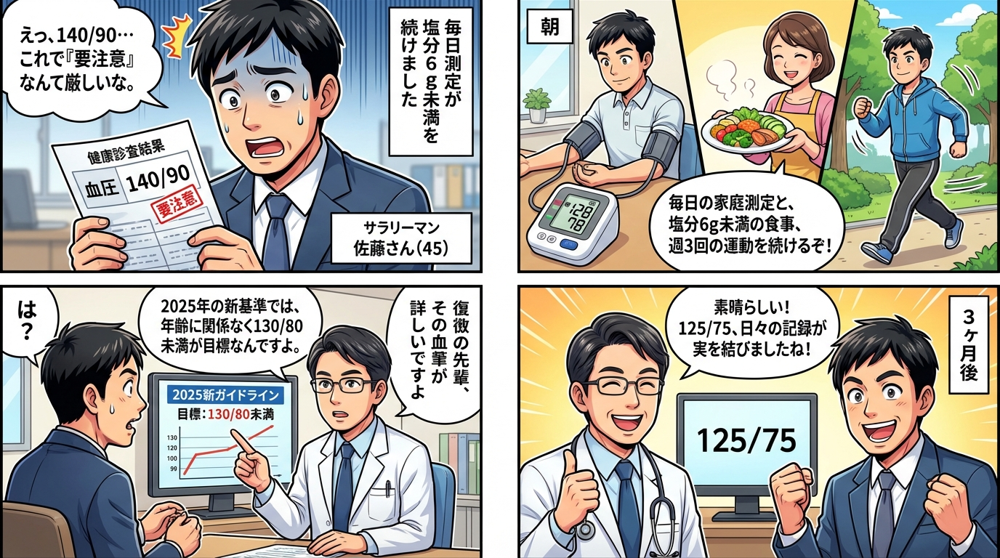
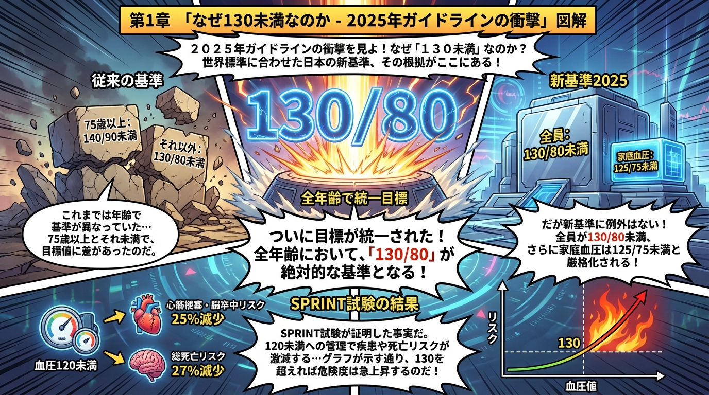
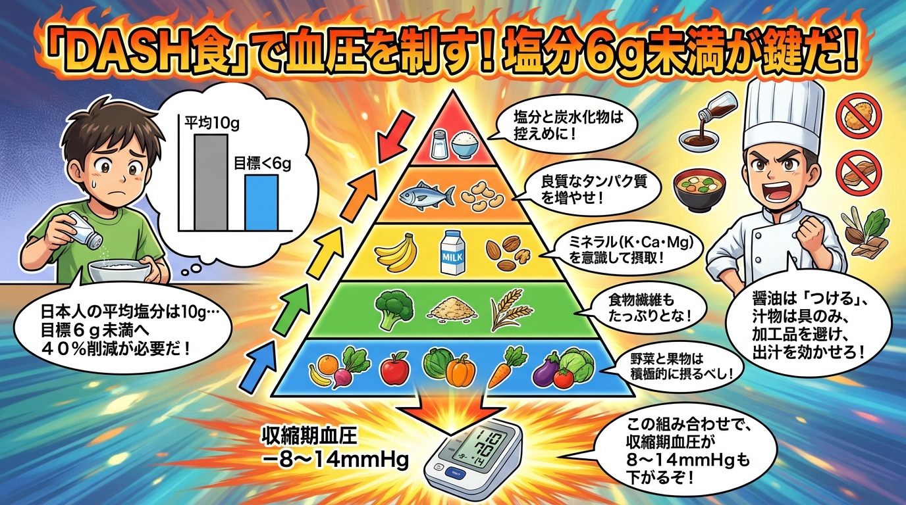
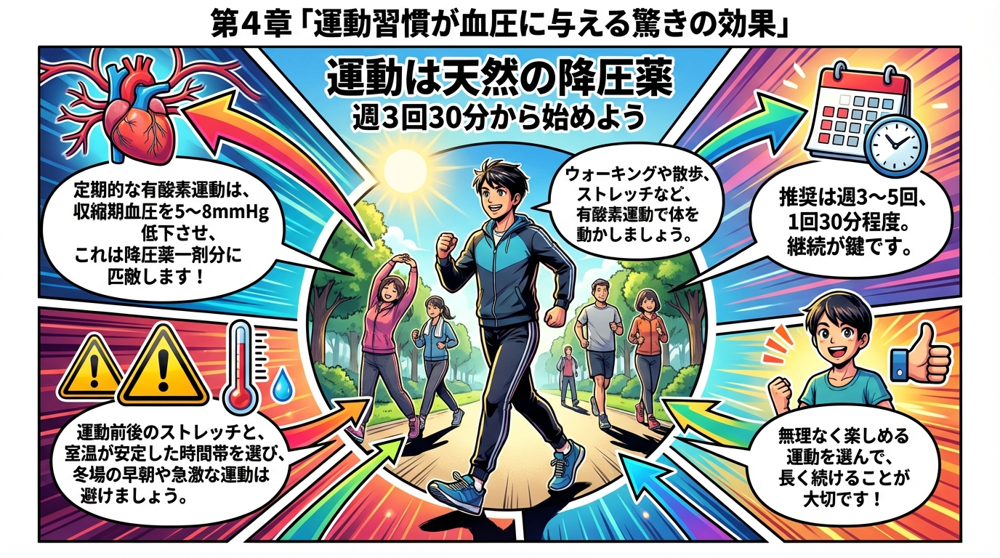
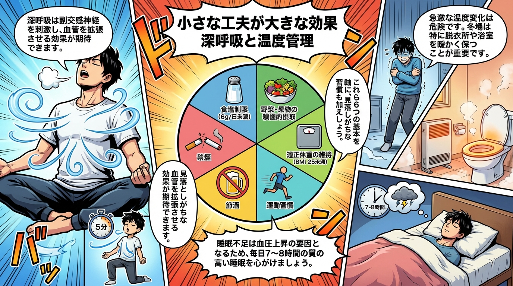

📖 4コマ漫画で学ぶ
📚 本編
第1章: なぜ130未満なのか - 2025年ガイドラインの衝撃
2025年7月、日本高血圧学会が発表した新しいガイドラインは、多くの人々に衝撃を与えました。従来、75歳以上の高齢者には「140/90未満」という緩やかな目標が設定されていましたが、新ガイドラインでは年齢に関係なく全員が「診察室血圧130/80未満」「家庭血圧125/75未満」を目指すことになったのです。
この変更の背景には、世界的な大規模研究SPRINT試験の結果があります。この研究では、収縮期血圧を120未満に厳格にコントロールした群において、心筋梗塞や脳卒中のリスクが25%減少し、総死亡リスクが27%も低下しました。つまり、血圧を130未満に保つことは、単なる「理想」ではなく、命を守るための「必須条件」なのです。
アメリカでは高血圧の診断基準そのものが130/80以上となり、ヨーロッパでも収縮期血圧を120～129の範囲にコントロールすることが推奨されています。日本も世界標準に合わせて、より積極的な血圧管理の時代に入ったと言えるでしょう。
第2章: 家庭血圧測定こそが最強の予防ツール

「病院で測ると血圧が高くなる」という経験をしたことはありませんか？これは「白衣高血圧」と呼ばれる現象で、実に30%の人に見られます。逆に、診察室では正常でも家庭では高い「仮面高血圧」も存在します。
脳卒中や心筋梗塞のリスク予測において、家庭血圧は診察室血圧よりも正確です。なぜなら、家庭血圧はあなたの「普段の姿」を映し出すからです。2025年ガイドラインが家庭血圧125/75未満を目標に設定したのも、この理由によります。
家庭血圧測定で重要なのは、上腕式の血圧計を使うことです。手首式は正確な値が測れないことが多く、ガイドラインでも推奨されていません。測定は1日2回、朝は起床後1時間以内（排尿後、服薬・朝食前）、夜は就寝前に行いましょう。
測定時は背もたれのある椅子に座り、両足を床につけ、カフ（腕帯）を心臓の高さに保ちます。5～6回深呼吸してリラックスしてから測定するのがコツです。食後や寒い部屋では血圧が高めに出るため、測定環境にも注意が必要です。
第3章: DASH食+減塩 - 日本人に最適な食事戦略
血圧を下げる食事法として世界的に注目されているのが「DASH食」です。これはアメリカで研究された食事療法で、塩分と炭水化物を控え、カリウム・カルシウム・マグネシウム・食物繊維・タンパク質を増やすというアプローチです。
日本人の食塩摂取量は平均10g/日と世界的に見ても多く、高血圧の人には6g/日未満が推奨されています。つまり、日本人には「DASH食+減塩」の組み合わせが最も効果的なのです。
具体的には、野菜・果物を積極的に摂取し、コレステロールや飽和脂肪酸を控えめにします。塩分感受性が高い日本人は、減塩だけで大きく血圧を下げることができます。醤油やソースを「かける」のではなく「つける」、汁物は具だけ食べて汁を残す、加工食品を避けるなど、小さな工夫の積み重ねが重要です。
第4章: 運動習慣が血圧に与える驚きの効果
高血圧を予防・改善する運動は、全身を使う有酸素運動が最適です。散歩、ウォーキング、ストレッチなど、無理のない範囲で続けられるものを選びましょう。
運動の効果は数値にも表れます。定期的な有酸素運動を行うことで、収縮期血圧は平均5～8mmHg低下するというデータがあります。これは降圧薬1剤分に相当する効果です。
重要なのは「続けること」です。週に3～5回、1回30分程度のウォーキングから始めてみましょう。急激な運動は逆効果になることもあるため、運動前後のストレッチを忘れずに。また、冬場の早朝など急激な温度変化がある環境での運動は避け、室温が安定した時間帯を選ぶことが大切です。
第5章: 見逃されがちな生活習慣の改善ポイント
日本高血圧治療ガイドライン2019は、6つの生活習慣修正項目を推奨しています：①食塩制限、②野菜・果物の積極的摂取、③適正体重の維持（BMI 25未満）、④運動習慣、⑤節酒、⑥禁煙です。
特に見逃されがちなのが「良質な睡眠」と「深呼吸」です。ゆったりとした腹式呼吸は副交感神経を刺激し、血管を拡張させて血圧を下げる効果があります。1日5分、意識的に深呼吸する時間を作るだけでも効果があります。
また、急激な温度変化も血圧を上昇させます。冬場の入浴時には脱衣所や浴室を事前に温めておく、トイレに小型ヒーターを置くなど、家の中の温度差を減らす工夫も重要な血圧管理の一環です。
第6章: 血圧130未満を維持するための継続戦略

血圧管理で最も難しいのは「継続すること」です。一時的に血圧が下がっても、生活習慣を元に戻せば再び上昇してしまいます。
継続のコツは「記録すること」です。毎日の血圧をノートやアプリに記録し、グラフ化して可視化しましょう。数値が下がっていく様子を見ることが、大きなモチベーションになります。
また、「完璧を目指さない」ことも重要です。外食で塩分を摂りすぎた日があっても、翌日から再び減塩に戻せば大丈夫。長期的な視点で、血圧130未満という目標に向かって、できることから一つずつ実践していきましょう。
家庭血圧が125/75未満を安定して維持できるようになれば、あなたの血管年齢は確実に若返り、脳卒中や心筋梗塞のリスクは大きく低下します。今日から始める血圧管理が、10年後、20年後の健康を決定づけるのです。